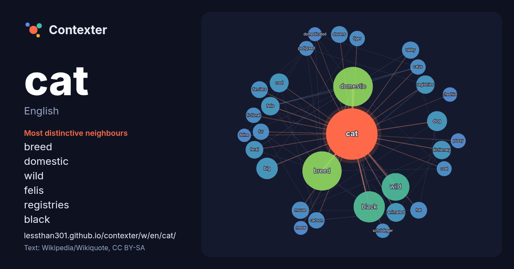

English · popular word
cat
The words found around it in 1889 instances from English Wikipedia, Wikiquote and Hacker News.

Most distinctive neighbours
- breed 91×
- domestic 74×
- wild 38×
- felis 24×
- registries 23×
- black 22×
- cool 22×
- dictionary 22×
- feral 22×
- tabby 21×
- animated 21×
- fanciers 20×
- dog 19×
- mouse 19×
- stevens 18×
- hat 18×
- fur 18×
- catus 17×
- cartoon 16×
- pedigreed 16×
× = how many times more often than in general English Wikipedia text.
Most frequent neighbours
- domestic 105
- breed 103
- black 66
- american 63
- wild 52
- film 46
- small 38
- big 31
- dog 27
- species 25
- animated 24
- cool 24
- free 24
- character 23
- dictionary 23
- felis 23
- registries 23
- native 22
- feral 21
- white 21
In context
- The cat (Felis catus), also called domestic cat and house cat, is a small domesticated carnivorous mammal. It is a member of Felidae, the family of mammals Wikipedia snippets · Cat
- Look up cat, Cat, CAT, catted, or catting in Wiktionary, the free dictionary. The cat (Felis catus) is a domesticated feline species. Cat or CAT may also Wikipedia snippets · Cat (disambiguation)
- .cat (spelled out in Catalan: punt cat [ˈpuŋ ˈkat]) is a sponsored top-level domain intended to be used to highlight the Catalan language, developed by Wikipedia snippets · .cat
- mechanics, Schrödinger's cat is a thought experiment concerning quantum superposition. In the thought experiment, a hypothetical cat inside a closed box may Wikipedia snippets · Schrödinger's cat
- A tabby cat, or simply tabby, is any domestic cat (Felis catus) with a coat pattern distinguished by an M-shaped marking on its forehead, stripes by its Wikipedia snippets · Tabby cat
- Demetre Georgiou; 21 July 1948), commonly known by his stage names Cat Stevens or Yusuf/Cat Stevens, is a British singer-songwriter and musician. He has sold Wikipedia snippets · Cat Stevens
- Bengal cat (Prionailurus bengalensis × Felis catus) is a breed of hybrid cat created from crossbreeding an Asian leopard cat to domestic cats, especially Wikipedia snippets · Bengal cat
- is the family of mammals in the order Carnivora commonly referred to as cats. A member of this family is also called a felid (/ˈfiːlɪd, -ləd/ FEE-lid Wikipedia snippets · Felidae
More English words
- art
- autumn
- bell
- bread
- bridge
- city
- climate
- clock
- death
- desert
- dog
- family
- food
- forest
- garden
- god
- gold
- health
- heart
- history
- honey
- horse
- island
- language
- life
- map
- mirror
- money
- mother
- mountain
- nature
- power
- rain
- road
- salt
- science
- shadow
- silence
- song
- star
- storm
- summer
- tea
- time
- train
- truth
- water
- winter
- work
Precomputed on 2026-10-09 with default settings (±5 words, medium corpus). The interactive map can refresh it with live data.